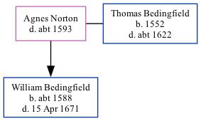

Agnes Bedingfield (née Norton) - c1593
[ Home ] | [ Calendar ] | [ Surnames Index ] | [ Family History ]Agnes Norton was the 10 times great-grandmother of Nigel Horne and married Thomas Bedingfield (with whom she had 1 child, William) at St Nicholas Church, Newington, Hythe, Kent, England on Sep 10, 15771.
She died c. 1593 in Lyminge, Kent and was buried there on Nov 15, 1593.
Children
- William was born c. 1588
Citations
- Kent Marriages And Banns - Findmypast
Media
Kent marriages and banns - GBPRS/CANT/M/97208784/2
Kent marriages and banns - GBPRS/EASTKENT/MAR/083700/2
England, Phillimore Marriage Registers, 1531-1913 - GBOR/PHILLIMORE-MARS/0354359/2
Family Tree
Generated by Ged2Site. Last updated on Jul 20, 2025